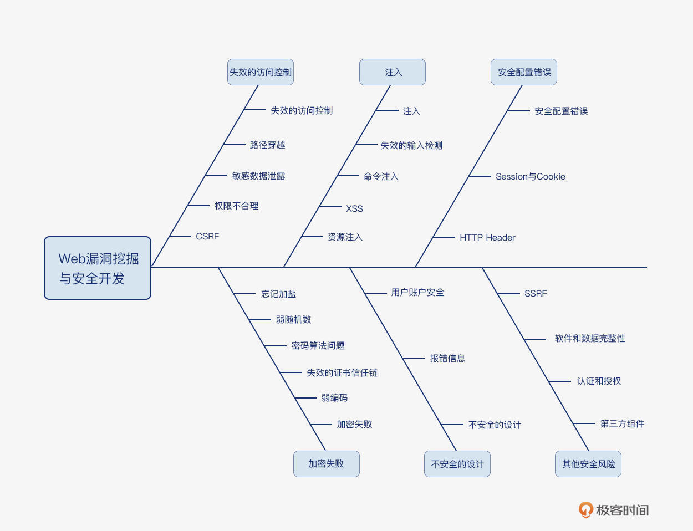
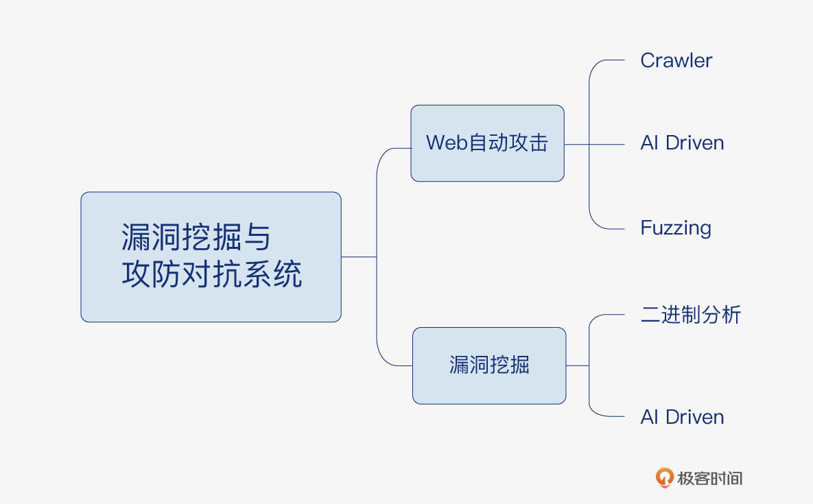
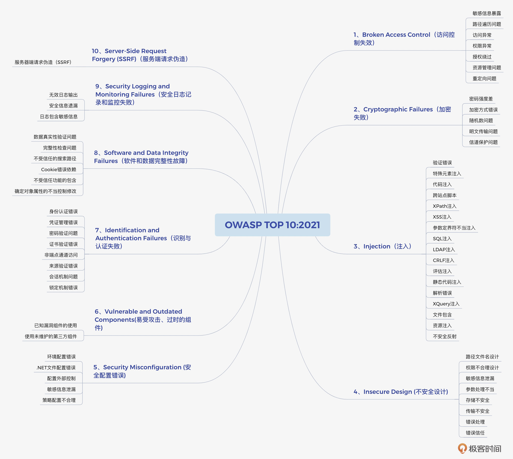

- 00 导读 解读OWASP Top10 2021.md.html
- 00 开篇词 从黑客的视角找漏洞，从安全的角度优雅coding.md.html
- 01 失效的访问控制：攻击者如何获取其他用户信息？.md.html
- 02 路径穿越：你的Web应用系统成了攻击者的资源管理器？.md.html
- 03 敏感数据泄露：攻击者如何获取用户账户？.md.html
- 04 权限不合理：攻击者进来就是root权限？.md.html
- 05 CSRF：为什么用户的操作他自己不承认？.md.html
- 06 加密失败：使用了加密算法也会被破解吗？.md.html
- 07 弱编码：程序之间的沟通语言安全吗？.md.html
- 08 数字证书：攻击者可以伪造证书吗？.md.html
- 09 密码算法问题：数学知识如何提高代码可靠性？.md.html
- 10 弱随机数生成器：攻击者如何预测随机数？.md.html
- 11 忘记加“盐”：加密结果强度不够吗？.md.html
- 12 注入（上）：SQL注入起手式.md.html
- 13 注入（下）：SQL注入技战法及相关安全实践.md.html
- 14 自动化注入神器（一）：sqlmap的设计思路解析.md.html
- 15 自动化注入神器（二）：sqlmap的设计架构解析.md.html
- 16 自动化注入神器（三）：sqlmap的核心实现拆解.md.html
- 17 自动化注入神器（四）：sqlmap的核心功能解析.md.html
- 19 失效的输入检测（上）：攻击者有哪些绕过方案？.md.html
- 20 失效的输入检测（下）：攻击者有哪些绕过方案？.md.html
- 21 XSS（上）：前端攻防的主战场.md.html
- 22 XSS（中）：跨站脚本攻击的危害性.md.html
- 23 XSS（下）：检测与防御方案解析.md.html
- 24 资源注入：攻击方式为什么会升级？.md.html
- 25 业务逻辑漏洞：好的开始是成功的一半.md.html
- 26 包含敏感信息的报错：将安全开发标准应用到项目中.md.html
- 27 用户账户安全：账户安全体系设计方案与实践.md.html
- 28 安全配置错误：安全问题不只是代码安全.md.html
- 29 Session与Cookie：账户体系的安全设计原理.md.html
- 30 HTTP Header安全标志：协议级别的安全支持.md.html
- 31 易受攻击和过时的组件：DevSecOps与依赖项安全检查.md.html
- 32 软件和数据完整性故障：SolarWinds事件的幕后⿊⼿.md.html
- 33 SSRF：穿越边界防护的利刃.md.html
- 34 Crawler VS Fuzzing：DAST与机器学习.md.html
- 35 自动化攻防：低代码驱动的渗透工具积累.md.html
- 36 智能攻防：构建个性化攻防平台.md.html
- 大咖助场 数字证书，困境与未来.md.html
- 春节策划（一） 视频课内容精选：Web渗透测试工具教学.md.html
- 春节策划（三） 一套测试题，看看对课程内容的掌握情况.md.html
- 春节策划（二） 给你推荐4本Web安全图书.md.html
- 结束语 无畏前行.md.html
- 捐赠
00 开篇词 从黑客的视角找漏洞，从安全的角度优雅coding
你好，我是王昊天，欢迎你加入我的专栏，跟我一起开启Web安全的进阶修炼之路。
先来介绍一下我自己。作为螣龙安科的创始人，我目前带领我的团队从事AI攻防对抗的研究工作。螣龙安科从2020年5月初创，在刚刚过去的11月份完成了新一轮千万级的融资。同时我也是《Web 安全攻防实战》视频课的作者。学过视频课的同学，对我就很熟悉了，恭喜你，你已经为这次的实战专栏打下了很好的知识基础；但没学过视频课的同学也不用担心，这门课的门槛只需要你有最基本的代码基础，我会手把手带你实现漏洞挖掘。
我的研究方向主要在Web 安全、移动安全、内网渗透、复杂环境APT对抗、网络安全工具开发、机器学习与攻防对抗结合等领域。现在正在准备一个为安全人员赋能的AI攻防产品，很快会推出社区版，帮助安全方向的同学们更好地积累知识、更高效地工作以及更智能地攻防。
从业十年，这套AI攻防产品一直是我的愿望，这是一条前沿技术的探索之路。在这个过程中，我遇到了很多跨学科技术问题，不断探索和抽象安全的本质，再尝试用机器语言去描述和复原。在不断地尝试和思考中，我总结了许多Web漏洞挖掘和漏洞出现原因的方法经验，非常希望能在这个专栏与你一起分享和交流！
攻防对抗的未来
我在早期工作的时候，对安全攻防是纯粹的热爱，但是有一个问题让我困惑了很久：如果走技术路线，如何让职业天花板进一步提高？日常工作中，虽然攻防领域涉及的知识面众多，但几年的时间已经足够对操作系统、网络协议、应用安全、Web渗透等攻防知识有所掌握，再想成长就有一种无法前进的感觉。
在困惑与思考的过程中，我也向许多朋友及前辈请教，终于发现站在更顶层的视角，更容易看清安全人员的成长之路。在攻击与防御的交互式对抗中，一直有一颗核心闪耀在对抗中央——漏洞。
如果把攻防对抗比作一场战争，Web渗透、后门技术、横向移动、隧道搭建、权限提升等技术就像摆兵布阵，用战术优势不断攻城略地；那么漏洞在攻防中的作用就像核武器，这是一种在硬件装备上的降维打击。
在Web领域使用框架级漏洞或是主动漏洞挖掘完成Web Server的控制、在渗透测试中使用边界设备RCE进入内网、在鱼叉式钓鱼攻击中通过浏览器漏洞植入后门、在内网中使用永恒之蓝进行横向移动、在服务器通过提权漏洞获取Administrator权限，你会发现在渗透测试之路走到尽头的时候，所有路标都指向了一座新的高山——漏洞挖掘。
漏洞挖掘思维
无论你是一名安全工程师，还是一名开发工程师，掌握漏洞挖掘思维以及漏洞利用原理都是非常有帮助的。
我见过的很多技术大牛，他们在自身的技术领域都非常专业，虽然他们可能并没有系统性地学习过安全知识，但是他们仍然能够写出非常安全优雅的代码，对系统可能出现的风险也了然于心，这是从业多年的积淀。我们常说，真正的黑客都是编程大牛，也是一样的道理。
当我们在开发一个系统的时候，其实会遇到很多潜在的安全隐患。以Web应用为例，前端可能会存在XSS、后端可能会发生注入、用户可能会遭遇CSRF、算法上可能发生弱加密、证书验证上可能遭遇中间人攻击，那么为什么平时开发中我们通常没有考虑到这些种种情况呢？因为我们开发中使用的底层语言、应用框架、技术架构都从不同层面帮我们解决了这些问题，这些解决方案的背后是语言开发工程师、框架开发工程师、开源工程师和公司架构师的共同努力，站在巨人的肩膀上前行使得我们不需要掌握庞大的知识体系。
未来你是不是也希望成为这些大牛的一员，写出简洁、优雅、安全的代码呢？我猜你是愿意的。
可能现在你并不具备大牛十年如一日的开发经验，也还没经历过重大的漏洞和安全事件，但这并不妨碍你掌握优雅安全编码的能力以及掌握一线实战漏洞挖掘的能力，这些大牛从时间沉淀中积累的宝贵经验正是在这个专栏中我想和你分享的。
漏洞挖掘很难，我能学得会吗？
即使大学时期是网络安全专业的同学，很可能也没有过一线的漏洞挖掘和漏洞修复经验，其实这是安全行业很特殊的一点。这几年来，安全行业高速发展，各类安全知识开始全面爆发，接触安全的同学越来越多，但是缺乏实战经验成为学习者进一步提高技术能力的瓶颈。网络安全作为一门工程学科，需要的不仅是扎实的理论基础，实战经历同样不可或缺。
通过学习渗透测试相关的知识，我们可以到一些靶场环境进行学习和测试，但漏洞挖掘和分析就没这么简单了。首先靶场环境普遍围绕基础漏洞构建，涉及高端复杂漏洞领域的不多，这就增加了实际体验漏洞的难度；其次漏洞挖掘和分析需要的往往不是单一知识点，可能会涉及多个知识体系内的多个点，这就导致我们很容易在跟踪一个漏洞过程中不断深入延展，最后丧失清晰的学习边界，越学越不懂；最后就是心态，安全是勇敢者的游戏，因为你的对手方是未知的，通过不断的学习和积累我们可以强化自身能力，通过自身强大的确定性来与对手方的不确定性博弈，这也是漏洞挖掘最难的一关。
经过这几年在漏洞领域的持续学习和分析，我积累了大量漏洞分析的方法和安全开发方案，再回头看自己一步一步从Web渗透走来，更加深刻地理解了安全行业的同学们成长过程中的障碍。
漏洞挖掘与安全开发需要大量的知识储备，但是现在大多的课程、学习资料，往往都是着眼于某一个知识点去解读，分析的重点往往是漏洞的成因和利用方式。但是对于含金量最高的地方——漏洞挖掘过程以及思考方式，却没有仔细分解。这就使得我们在学习的过程中，只收获了一个漏洞的利用方式，但是面对主动漏洞挖掘场景以及安全开发时无能为力。
俗话说“授人以鱼不如授人以渔”，但是小孩子才做选择，成年人是我全都要。
所以，这个专栏我将“授人以鱼和渔”，一方面我会带你遨游2021年十大Web领域安全风险，每一类风险都有近年来新鲜美味的漏洞供你品尝体验；另一方面，我会从漏洞挖掘的视角，逐一带你经历每一种安全风险的漏洞挖掘过程，让你掌握如雷达一般的潜在安全漏洞感知能力。关于知识点和学习过程，你也不用担心，每一个小主题我都会通过生动形象的故事让你快速理解知识点的本质，然后再展开深入探讨。
我们的课程怎么安排？
正好2021年OWASP发布了新的Web领域TOP 10风险种类，那我们本着学习效果最大化的角度，就从这个清单开始。
首先，我会用一讲的时间带领你整体地了解OWASP TOP的背景以及2021与2017年发生了哪些变化，这种宏观的顶层视角可以帮助我们建立一个与技术发展趋势相关的产业级认知，对我们的技术学习方向与未来职业选择都非常有帮助。
然后，开始学习几大主流风险种类，分别是失效的访问控制、加密失败、注入、不安全的设计以及安全配置错误，我们会深入每一个风险种类进行详细展开。
接着，对于剩下的安全风险类别，我们会在安全风险串讲带你逐一深入。
在学完所有这些漏洞的挖掘思想之后，我们会将他们融合在一起，在最后几讲带你构建自己的前沿漏洞挖掘与智能攻防系统。

我们的课程就是按照上述逻辑，依次为你讲解最新的Web领域十大风险种类的漏洞挖掘过程及安全开发细节。每节课都配有近几年的新鲜漏洞、PoC或者Exp代码以及搭建好的漏洞环境，让你能够跟着课程从体验、到使用、到挖掘、再到修复完成整个漏洞链条的学习。在课程的最后，你也可以使用我构建好的平台，来打造属于自己的个性化漏洞挖掘&智能攻防系统。

你能获得什么？
通过这个富有趣味性和知识深度的专栏，如果你能够坚持学习完毕，肯定可以得到这些收获：掌握Web安全领域漏洞挖掘的思维方式，收获对Web安全更深入的理解以及一个属于自己的个性化智能攻防对抗系统。
我绘制了一幅简化的OWASP TOP 10风险种类知识体系图，这也包含了后面课程涉及到的所有知识点。尽管图中是一些简单的安全术语，随着你的学习历程，你会发现每一个安全术语背后都是设计精巧、精彩纷呈的计算机学科知识。

由于复合型安全人才是近些年来的稀缺性，如今，任何一家中大型互联网或者相关产业公司都非常重视信息安全建设。安全相关的知识体系，会成为你涨薪和晋升的黑马加分项。无论是对于公司内部业务群的安全建议，还是对你正着手开发的业务系统进行安全架构的提升，都可以让你从团队中脱颖而出。在这样的背景下，这个专栏给你职业生涯带来的成长你甚至在短期内就能明显感受到。
从长期看来，通过这门课的学习，你会明显提升对于可能存在漏洞的代码或者业务的感知力，并且可以学会如何进行安全的代码开发以及构建安全的Web应用。我相信，这对你提升技术理解力以及拓展技术深度和广度是大有裨益的。之后再进行某些功能开发时，就可以很容易具备安全架构师级别的视角和相应解决问题的思维。
摆脱“庸俗”的“面向薪资编程”，相信你对于热爱的coding事业仍满怀初心。学习安全，正是不断深入代码本质，掌握全局视角的过程。作为一个工程师，相信我们对于自己的事业都充满热爱与好奇，那么不妨让安全成为我们敲开新世界大门的那块砖。
不知道你在学习安全的道路上有什么有趣的小故事呢？你对安全又有怎样的理解呢？欢迎你在评论区留下你的答案。下节课我们就正式开启正文部分的学习。
© 2019 - 2023 Liangliang Lee. Powered by gin and hexo-theme-book.